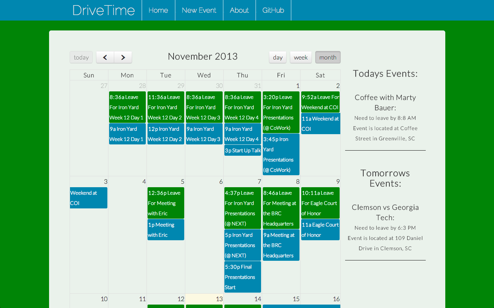

Welcome to my site!
Home of Brandon Miller Front End Developer
Thank you for stopping by. I am a Front End Developer, Contemporary Northern Traditional Powwow Dancer, and former Boy Scout Resident Camp Program Director living in the Upstate of South Carolina.
I was inspired to become a developer by working with individuals and organizations that were oppressed under the weight of archaic pen-and-paper systems and crazy schedules that software could vastly improve. I see myself as a problem solver and see each build as a new problem to solve. Being able to build something that meets a need is what drives me to be a developer.
As a developer I have experience in a few languages and libraries including: HTML, CSS, JavaScript, C, jQuery, Underscore.js, and Backbone.js. You can find a few examples of my work on down the page (click the images if you wish to visit the projects).
Samples of My Work
-
DriveTime
This application was my final project while at The Iron Yard Academy. DriveTime takes in times for events and an individuals starting location and ending location. The application then feeds these locations to Google Maps to create schedules that factor in the driving time to get to an event.

-
Responsive Design Practice
This was a project while I was at The Iron Yard Academy. This site was created as practice in making a responsive site from a designers mock up. It untilizes CSS for all of its responsiveness and achieves it without the need for extra javascript.
-
What To Do?
This application was the first project while I was at the Iron Yard Academy that ventured into data persistance. The app read in task names and descriptions and saved them to a free Parse server account. The tasks could be deleted or edited and any changes would be persited to Parse.